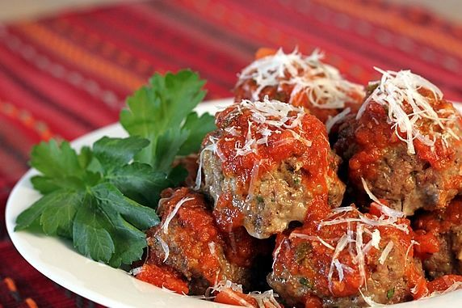

Meatballs
Italian Meatballs

Ingredients:
- 1/3 cup plain bread crumbs
- 1/2 cup milk
- 2 tablespoons olive oil
- 1 onion, diced
- 1 pound ground beef
- 1 pound pork
- 2 eggs
- 1/4 bunch fresh parsley, chopped
- 3 cloves garlic, crushed
- 2 teaspoons salt
- 1 teaspoon ground black peppar
- 1/2 teaspoon red pepper flakes
- 1 teaspoon dried Italian herb seasoning
- 2 tablespoons grated Parmesan cheese
Directions:
- Cover a baking sheet with foil and spray lightly with cooking spray
- Soak bread crumbs in milk in a small bowl for 20 minutes
- Heat olive oil in a skillet over medium heat. Cook and stir onions in hot oil until translucent, about 20 minutes
- Mix beef and pork together in a large bowl. Stir onions, bread crumb mixture, eggs, parsley, garlic, salt, black pepper, red pepper flakes, Italian herb seasoning, and Parmesan cheese into meat mixture with a rubber spatula until combined. Cover and refrigerate for about one hour.
- Preheat an oven to 425 degrees F (220 degrees C).
- Using wet hands, form meat mixture into balls about 1 1/2 inches in diameter. Arrange onto prepared baking sheet.
- Bake in the preheated oven until browned and cooked through, 15 to 20 minutes.